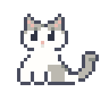
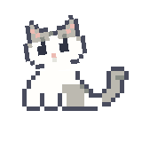
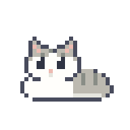
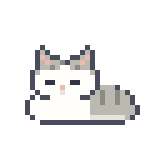
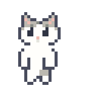

Still Making · CAT STUDY잠들고, 고개를 기울이고, 번쩍
작고 둥근 얼굴과 반짝이는 눈으로 확정했어요. 아래에서 고양이를 잡고 움직여보세요.
최종 선택 · 작고 둥근 얼굴 / 반짝이는 눈
기본 앉기

살짝 갸웃

식빵 자세

잠든 모습

들어 올렸을 때

마우스로 살짝 들어 올려보세요
고양이를 누른 채 움직이면 들어 올린 자세로 바뀌고, 놓으면 앉습니다. 키보드는 고양이에 초점을 두고 Space 또는 Enter로 전환할 수 있어요.